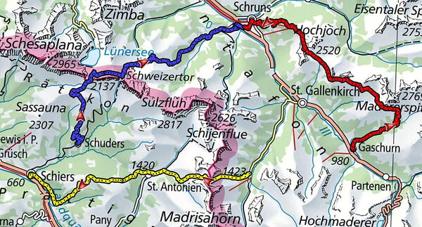
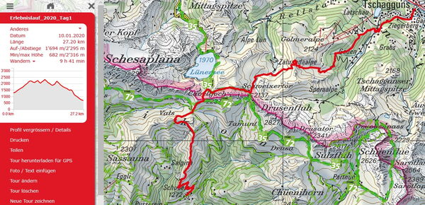
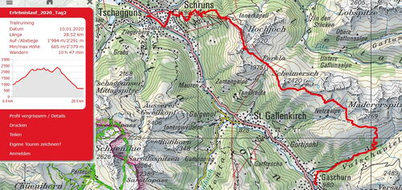
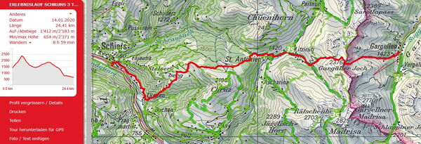

Erlebnislauf 3 Tage
Klosters_Gargellen
Vom 04. bis 06. September laufen wir in 3 Tagen von Schuders über Cavelljoch ins österreichische Montafon. Vorbei an Schweizertor und Kreuzjoch laufen wir Schruns / Tschagguns entgegen. Übernachtung mit Halbpension erwartet uns im Hotel Auhof in Schruns. Am zweiten Tag lassen wir uns nach Gaschurn fahren. Das Valschavieltal hoch auf 2200 m.ü.m. dann folgt ein Panoramaweg bis Furkla Grasjoch, ein letzter Anstieg zum Kreuzjoch bevor ein langer Abstieg folgt nach Schruns. Am dritten Tag fahren wir erst nach Gargellen, wo wir zur Ablusstour starten. Erst geht es 800 hm hoch zum Gargeller-/St.Antönier Joch, wieder auf schweizer Boden gehts nach St. Antönien und über Stelserberg nach Lunden ins Tal nach Schiers zum Endpunkt der Tour.
Trailrunning im Wohlfühlbereich. Das Tempo passen wir dem Gelände an und geniessen dabei die schöne Landschaft. Wir haben auch Zeit um Pausen einzulegen. Ist das Gelände eben oder sogar abfallend so sind wir im Laufschritt unterwegs. Steilere Aufwärtspassagen werden auch in zügigem Wanderschritt bewältigt.
Jeweils mit dem Bus zum Ausgangspunkt der Tagestour > zur Übesichtskarte

Schuders-Schruns

Schuders - Cavelljoch - Schweizertor - Kreuzjoch - Tschagguns
28 Km +1700 hm / -2300 hm zur Strecke auf SchweizMobil
Der Treffunkt zum Erlebnislauf befindet sich beim Bahnhof Schiers. Erst führt uns ein Bus nach Schuders zum Start der ersten Etappe. Nach Gruppeneinteilung nach Stärkeklassen laufen wir in 3 Gruppen mit je 2 Ortskundigen Leitern los in Richtung Landesgrenze beim Cavelljoch. Herrliche Aussichten sind garantiert auf die österreichische- sowie Schweizerseite. Das Ziel der ersten Tour befindet sich in Schruns. Wir verbringen zwei Nächte im Hotel Auhof mit Nachtessen und Frühstück. Die Besprechung der Tour vom zweiten Tag erfolgt nach dem Nachtessen.
Gaschurn - Schruns

Gaschurn - Valschavieltal - Augstenboden - Furkla Grasjoch - Kreuzjoch - Kapellalpe - Schruns
27 Km +1900 hm / -2300 hm zur Strecke auf SchweizMobil
Wir starten mit einer Busfahrt nach Gaschurn. In drei Gruppen nach Stärkeklassen laufen wir los das Valschavieltal hoch bis zum Augstenboden. Aus schönem Panoramaweg geht es gegen Grasjoch und Kreuzjoch. Ein Anstieg zur Kapellalpe bevor es runter geht nach Schruns. Im Hotel Auhof wird nach dem Nachtessen die Tour vom Sonntag besprochen.
Gargellen - Schiers

Gargellen - Gargeller Joch / St.Antönier Joch - St.Antönien - Stelserberg - Lunden - Schiers
24 Km +1400 hm / -2100 hm zur Strecke auf SchweizMobil
Nach der Busfahrt nach Gargellen starten wir zur dritten Tour zurück ins Prättigau. in drei Gruppen geht es los zum Gargeller Joch - St.Antönier Joch. Wieder auf Schweizerboden laufen wir nach St. Antönien, weiter über Stelserberg nach Lunden und zum Ziel des Erlebnislaufes in Schiers. Hier erwartet uns ein feines z'Vieri bevor es auf den Heimweg geht.
Laufleiter Erlebnislauf
- Marco Jäger, Chur
- Petra Jäger, Chur
- Brigitte Eggerling, Chur
- Dani Zähner, Felsberg
- Michi Gisler, Bonaduz
- Dani Bold, Domat / Ems
- Martin Lüönd, Chur
- Barbara Schuler, Schaan